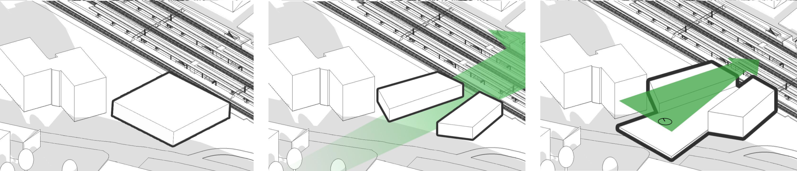
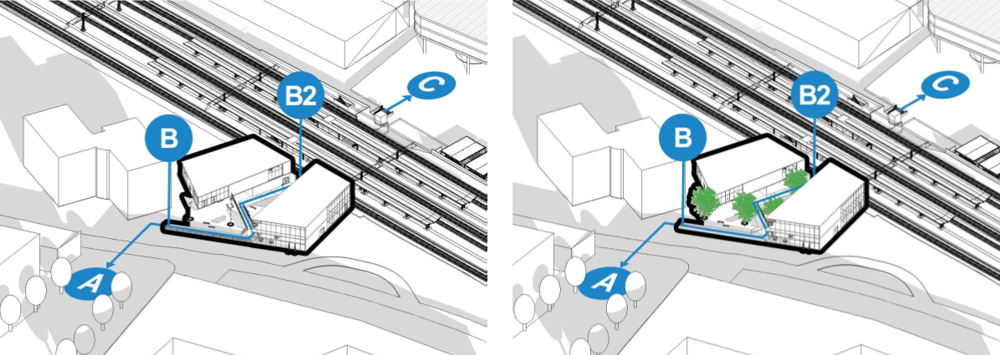
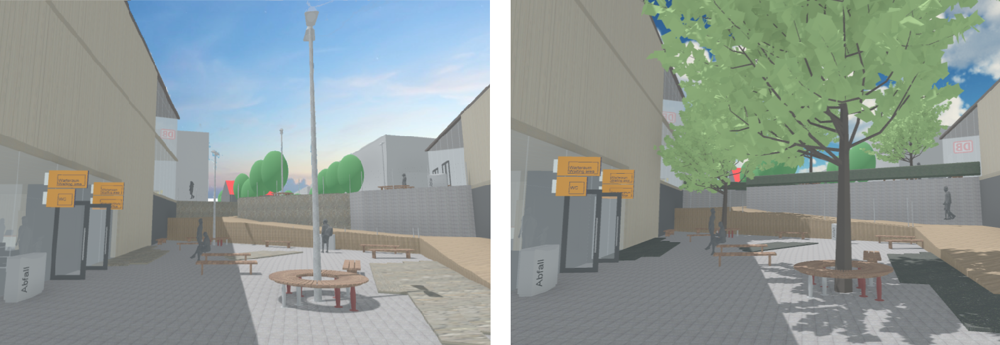
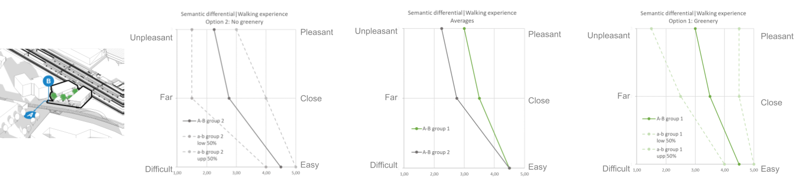
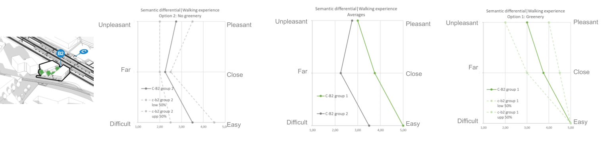
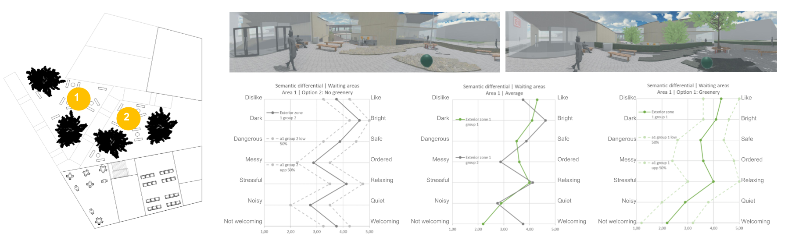
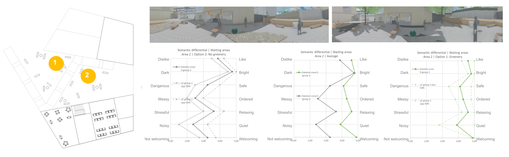
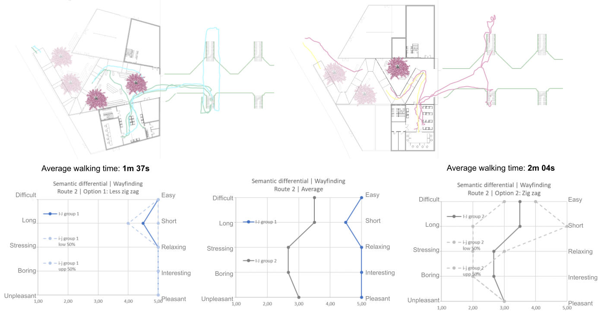

A Supernormal Greenway
EL EFECTO DE LA VEGETACIÓN EN EL DISEÑO DE UNA ESTACIÓN DE TREN
Keywords: Revit, Dynamo, VR, Unity, Big Data, percepción de usuario, isovist, metric step, visual step
Supernormal Greenway es un estudio sobre la percepción del espacio por parte del usuario cuando se alteran factores en el diseño de una estación de tren. Para ello, se realiza un diseño de una estación de tren a través de unas condiciones básicas como la parcela, el tamaño del volumen y las actividades que se han de realizar en su interior. También se ofrece un entorno que afecta al diseño de dicha estación.

A partir de este diseño se decide estudiar dos variables: la presencia de vegetación y la forma de la rampa. Para ello se elige una muestra de 15 estudiantes que visitan virtualmente (a través de gafas RV) las opciones de diseño y las puntúan en función de una serie de parámetros seleccionados.
El primer punto a analizar será la orientación. Para ello se les pide a los usuarios que sigan los recorridos A-B y C-B2 y se puntúan según el agrado y la dificultad del recorrido. También se miden otros parámetros físicos la trayectoria y duración de los recorridos. Ambos valores se comparan para intentar establecer una relación.

Luego se analizan las características subjetivas del espacio como la iluminación, el orden o el agrado, sobre todo en aquellas zonas donde el público permanece más tiempo, como las zonas de espera, y se comparan las respuestas de ambos diseños para decidir cuál será mejor para un posible público.

El objetivo del trabajo era averiguar qué factores de diseño podían influir positivamente en la respuesta de los usuarios a la estación. Aunque no es posible extraer conclusiones certeras debido al pequeño tamaño de la muestra, es interesante conocer cómo es la interacción de los usuarios con nuestros diseños. Se trata de un estudio que puede realizarse tanto a nivel de obra como de planificación urbana y que puede aportar información importante en el desarrollo de nuevas normativas de diseño para satisfacer las necesidades de los usuarios y optimizar el trabajo del arquitecto.
RESULTADOS PRUEBAS DE ORIENTACIÓN


RESULTADOS PRUEBAS ZONAS DE ESPERA


RESULTADOS PRUEBAS RAMPAS
